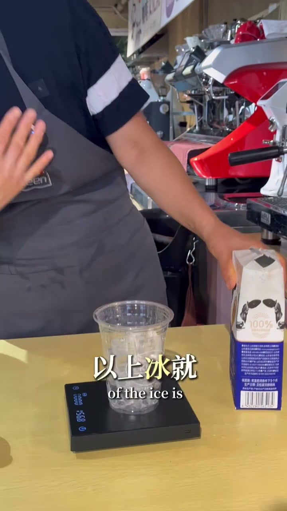
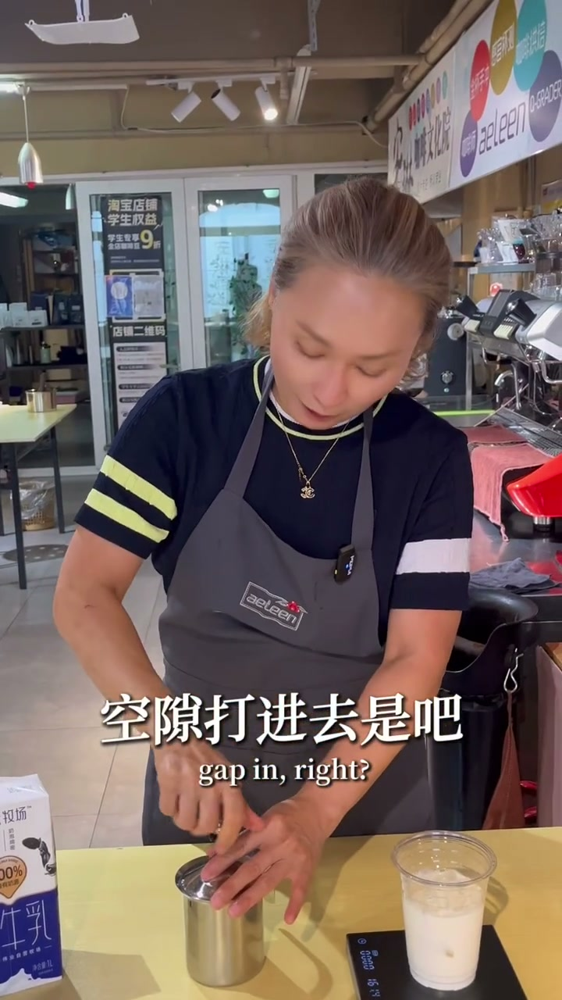
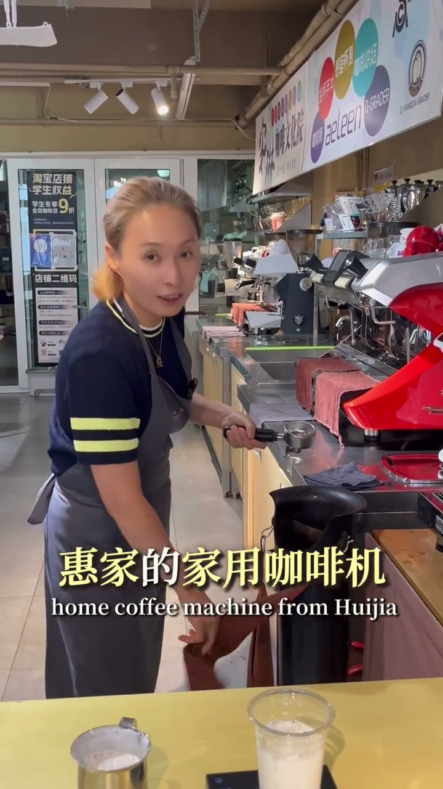
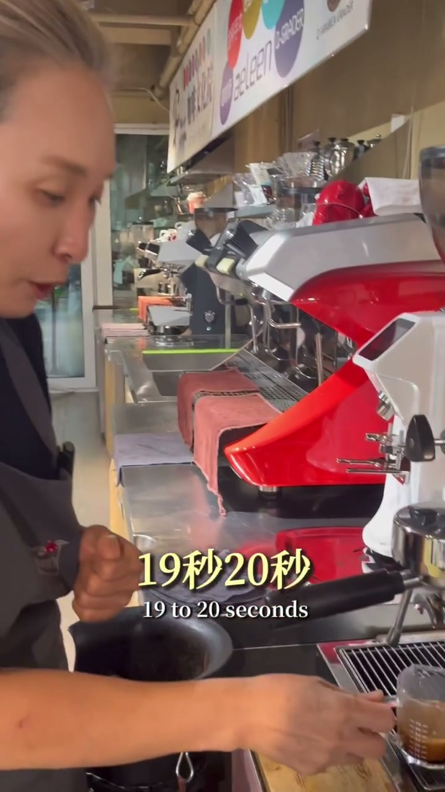
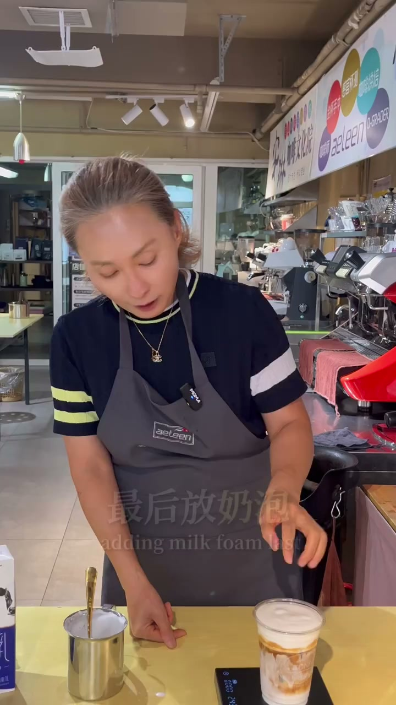
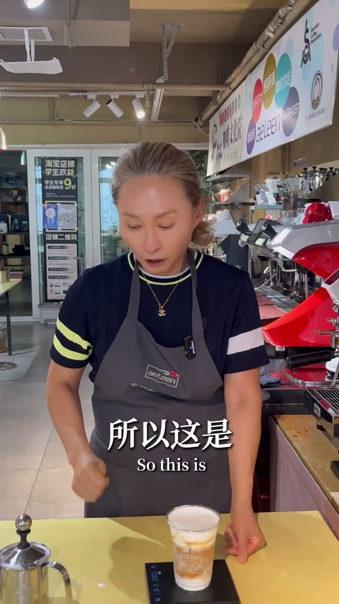

内容要点
夏天想喝冰卡布奇诺但不知道怎么做的看这里！从冰块量、浓缩咖啡与牛奶的配方比例、奶泡器的使用方法到组装顺序，每一步都有详细演示。核心工具只需一台小型磨豆机、一台单头家用咖啡机和一只奶泡器，比拿铁咖啡味更浓、奶泡更绵密。
知识结构
150克冰块（六到七分满），14倍浓缩咖啡35克，牛奶160-180克。卡布奇诺突出咖啡味，浓缩与牛奶比例约1:4到1:5。
冰卡布不能用蒸汽棒，改用奶泡器。倒入三分之一牛奶，密封状态下压10-15次把空气打进去，不能太稀。奶泡厚度最终要2到3公分以上。
35克咖啡粉19-20秒出35克浓缩（盎司杯40-50ml）。组装：冰块→牛奶→浓缩咖啡→最后放上2-3厘米厚的绵密奶泡。
冰焦糖玛奇朵只需底部先放焦糖糖浆再按同样顺序做。设备门槛极低：小磨豆机+小咖啡机+打泡器即可。咖啡味比拿铁更浓。
冰块150g → 牛奶160-180g → 浓缩35g → 绵密奶泡2-3cm。浓缩与牛奶比例1:4到1:5，不要忘记！
一、冰块与配方比例
[00:00→56:40]首先准备150克左右的冰块，六到七分满就可以。核心是牛奶的量：因为工厂是跟14倍浓缩的比例，大概是1比5或者是1比4。如果用35克的14倍浓缩咖啡，那么牛奶大概是180克，不超过这个量。教练的牛奶会倒在160到180之间。所以大概就是1比4左右的比例。卡布奇诺还是要突出咖啡的味道，14倍浓缩和牛奶的比例大概在1比4到1比5，不要忘记。剩下的都是奶泡。

二、奶泡器打奶泡：不能用蒸汽棒
[56:40→121:76]卡布奇诺的奶泡如果是热的用蒸汽棒来打，但冰卡布不能用机器打，必须用奶泡器。原理是一样的：把外面的空隙打进去。操作很简单——倒入三分之一左右的牛奶（不要倒太多会溢出），密封状态下压大概10到15次，把气往里面打进去，它就变成奶泡了。奶泡的厚度很重要，不能太稀。如果觉得还需要绵密，可以再打一下。

三、萃取浓缩与组装
[121:76→220:40]准备好奶泡之后去萃取浓缩。用35克咖啡粉，正常家用咖啡机单头的，19到20秒时间出35克浓缩，盎司杯大概在40到50毫升之间。奶泡准备好之后，把奶泡放到浓缩上面。一定要做到这种没有流状的奶泡才可以——奶泡的厚度最终要两到三公分以上。
组装顺序：先放冰，再倒牛奶，然后倒浓缩咖啡，最后放奶泡。或者反过来：冰→牛奶→奶泡→上面再倒浓缩也可以，顺序没有关系。不过教练比较喜欢最后放奶泡，因为这样可以看到分层。上面至少两到三公分都是奶泡，所以第一口喝的是绵密的奶泡，以及在进来的时候有这个浓缩的味道。


四、变体做法：冰焦糖玛奇朵
[220:40→316:04]夏天需要这种非常绵密的奶泡，冰的。只要你有奶泡器，上网购买这样的就可以了，很简单。然后放一个三分机或四分机的一些牛奶打就可以了，打十次就够了，很快就打发出绵密的奶泡。那焦糖玛奇朵怎么做到呢？底下可以先放一个焦糖糖浆，先牛奶化开之后是吧，一样顺序，只是底下先放焦糖糖浆，先牛奶化开，顺序都一样，在上面再放焦糖淋酱就可以了——只是多了一两个工序。

五、设备门槛与口感对比
[316:04→353:48]很多人觉得这很难，但其实只需要一个小小磨豆机、小小的咖啡机、一个小小的打泡机，就能做出非常好喝的冰卡布，也可以做冰焦糖玛奇朵。那么跟拿铁什么区别呢？它是一个非常绵密的奶泡，咖啡味道比拿铁可能更多一点，比例大概在1比4到1比5左右。佳佳你可以试一下吧，非常简单，跟着我来，下课！
